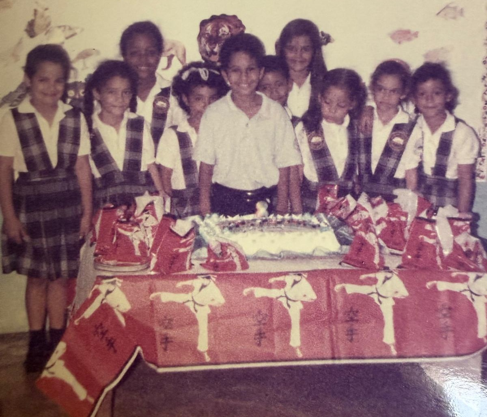

Página 1: Inicio – El Ciclo de los 3 Soles
📊 Progreso de la Gesta
0 / 1000 Puntos Completados
Introducción de la Gesta:
"¡Hau, Cacique Francisco! Escucha la voice de Yocahú, que sopla a través del mar, desde las altas montañas de Quisqueya (tu tierra natal) hasta las costas de Borikén (la tierra que te forjó). Eres un Cacique de dos Yucayeques, unido por la misma sangre taína y las mismas estrellas." Has completado cuarenta y cinco soles sobre la tierra.
Cacique Francisco, tu destino no se labra en un solo día. Esta gesta se compone de 3 Soles Sagrados. El Jueves es tu Rebelión y Retorno, el Viernes es tu Purificación y Deleite, y el Sábado será tu Consagración Final.
Solo si acumulas los puntos de cada jornada, serás digno de los misterios del tercer día. ¡Meta Final: 1,000 Puntos!
Las Reglas de la Gesta:
- Ubicación Sagrada: El mapa es secreto. Tu Guaca te guiará por las sendas de Borikén. Solo cuando lleguen al punto exacto, se revelará la energía del lugar.
- La Señal Ancestral (Oráculo): Al llegar a cada parada, aparecerá un mensaje enigmático. Deberás leerlo para entender la esencia de ese batey y lo que los ancestros esperan de ti allí.
- El Reto de Sabiduría (Prueba): Es el desafío que debes resolver en el sitio. Observa, pregunta y descubre los secretos del lugar para ganar tus Puntos de Valor.
- El Registro del Guerrero (Documentación): Para desbloquear el siguiente paso, deberás dejar constancia de tu hazaña con una foto o video y cumplir la Ofrenda de acción. Una vez documentado, la Guaca validará tu progreso.
Agenda de la Gesta (Texto Íntegro Revelación Progresiva)
☀️ SOL 1 (Jueves 2 de Abril): El Despertar de Guahayona
La Bendición de Atabey:
"Como la Diosa Madre y señora de las aguas dulces, Atabey bendice hoy tu inicio. Todo gran imperio comienza con un cimiento sólido, y hoy regresas al origen para reconocer tu fuerza. Que las aguas de Borikén limpien tu camino y el sol de la mañana ilumine tu rastro."
Mensaje del Oráculo para el Cacique (Sol 1)
"Quererse a uno mismo es el principio de una historia de amor que dura toda la vida." — Oscar Wilde.
"Baby, ¡Feliz cumpleaños! A tus 45 años, has construido una versión de ti que admiro profundamente. El amor propio no es egoísmo, es saber cuidar el templo que eres para poder entregarte a los demás. Que este nuevo año de vida sea para seguir priorizando tu paz, tus sueños y esa fuerza interna que te hace único. Celebro tu resiliencia y el gran hombre que eres hoy. Eres el Cacique de tu propio destino."
**(Guía Espiritual) La Leyenda del Día: Guahayona, el Guerrero-Navegante Rebelde**
Hoy caminas bajo la sombra de Guahayona, el cacique que rompió el maleficio de la cueva y se atrevió a llevar a su pueblo más allá del mundo conocido, abandonando lo familiar para explorar lo desconocido. Como el Venus matutino, hoy íntegras tus opuestos: la fuerza del guerrero y la sabiduría del navegante. Eres el símbolo vivo de la resiliencia; aquel que muere y renace con más poder en cada ciclo.
📍 Parada 1: Ubicación Sagrada
Umbral del Yucayeque: Como Guahayona en busca de la esencia de la tierra, has cruzado el portal hacia tu primer gran batey. Atabey te recibe en este rincón de Palmer, donde el aroma a grano tostado y pan recién horneado confirma que la travesía de la Guaca ha comenzado bajo su protección.
La Señal: Busca el tesoro blanco que nace de la palma y se adorna con los frutos de la tierra lejana. No es pan, pero alimenta el alma; es una joya de nieve que cruje al morder y guarda el dulzor de los ancestros.
Reto de Sabiduría (La Alquimia del Manjar): La Ceremonia del Gusto (20 pts): Debes reclamar y degustar el Dulce de la Casa. No es un simple bocado; es una prueba de tus sentidos. Tu lengua debe ser el instrumento tras el primer bocado, deberás identificar los elementos ocultos que componen este postre.
El Registro (10 pts): Captura del Dulce de la Casa antes de que su rastro desaparezca de la tierra junto a tu primer café de la Odisea.
Ofrenda (10 pts): Beso de impacto para que el Oráculo abra los senderos hacia la montaña sagrada.
Subtotal Parada 1: 40 pts
📍 Parada 2: Ubicación Sagrada
Umbral del Yucayeque: Has dejado atrás el aroma del pan para encontrarte con el abrazo de Karaya (la luna/el mar). En Ceiba, donde los vientos cuentan historias de Roosevelt Roads, la costa te espera para purificar el espíritu.
La Señal: Busca el camino donde el metal de los carros descansa sobre la arena. No busques portones ni muros; el refugio es un bohío de madera que mira fijamente hacia donde nace el sol sobre las aguas.
Reto de Sabiduría (10 pts): La Vigilancia del Guerrero: Al estacionarte, identifica cuántos bohíos (gazebos) de madera protegen la orilla en tu zona inmediata.
El Secreto de la Arena (10 pts): Camina hacia la orilla y encuentra una piedra o caracol que haya sido "esculpido" por el mar. El Oráculo validará tu hallazgo si logras describir su forma única.
El Registro: Foto de tu nombre "Cacique 45" escrito en la arena con uvas de playa (20 pts). El Sello de la Guaca: Reportar el número de bohíos contados (5 pts).
Ofrenda: Cargar a la Guaca 20 pasos. (20 pts)
Subtotal Parada 2: 65 pts
📍 Parada 3: Ubicación Sagrada
Umbral del Yucayeque: Has navegado las aguas de Ceiba y ahora, como Guahayona transformado en lucero de la tarde, arribas al Batey de las Sombras Luminosas. En Fajardo, las cuevas se vuelven templos de cristal y el fuego ya no consume madera, sino que brilla en hilos de luz (neón) sobre las paredes, celebrando tu renacimiento en este nuevo ciclo de vida.
La Señal: Busca el caney donde los espíritus del teatro susurran historias de otros mundos. No busques el sol de Atabey, busca la luz que imita a las luciérnagas gigantes en las paredes y el muro que guarda la memoria de los maestros del escenario. Allí, donde el cristal choca y la música vibra, se esconde la última prueba de tu odisea.
Reto de Sabiduría (La Alquimia del Rostro Oculto): 1. La Pócima del Misterio: Debes invocar al Phantom of the Opera. Tu paladar, ahora refinado por el viaje, debe actuar como el Cemí de la Verdad. 2. El Descifrado de la Sombra (15 pts): Tras el primer contacto con esta pócima mística, deberás identificar qué elementos de la tierra y el bosque (ingredientes) componen su esencia.
El Registro: Evidencia del Guerrero (15 pts): Inmortalizar tu imagen en el Mural Clásico del local, donde la figura del Cacique 45 se funda con el arte del escenario para el reporte eterno de la Guaca.
El Sello de la Sabiduría (30 pts): Grabar El Discurso de Guahayona: "Hoy, bajo la bendición de Atabey y con la fuerza de Guahayona, cierro el ciclo de la cueva. He navegado 45 soles, sorteando tormentas y conquistando mis propios miedos. Dejo a mi espalda lo que ya no me pertenece y reclamo, en este nuevo Yucayeque, mi derecho a la paz, al amor propio y a la abundancia. (Levanta la pócima del Phantom of the Opera a la altura de los ojos) Brindo por el hombre que renace hoy. Por la resiliencia que corre por mis venas y por el fuego sagrado que nunca se apaga. ¡Por mis 45 ciclos! ¡Por la victoria de la Guaca! (Bebe un sorbo solemne y asiente con autoridad)"
Ofrenda: Beso de Victoria + Abrazo de 45 segundos. (20 pts)
Subtotal Parada 3: 80 pts
📍 Parada 4: Ubicación Sagrada
Umbral del Yucayeque: Has navegado las rutas de Borikén y conquistado los retos del día. Como Guahayona que regresa de su expedición con el espíritu fortalecido por 45 soles de sabiduría, es momento de cruzar el último portal. Atabey te guía de vuelta al Bohío Sagrado para que el Guerrero descanse y reciba los frutos de su valentía.
La Señal: "Busca el umbral de madera que custodia tu paz. Tras esa puerta, el aire ha cambiado; el silencio es una máscara que oculta la verdadera recompensa. No busques más mapas, tus pasos te han traído al centro de tu propio imperio."
Reto de Sabiduría (La Invocación del Umbral) (30 pts): El Pulso del Portal: Antes de abrir, coloca tu mano sobre la puerta y realiza una respiración profunda. Siente la vibración de la madera; es el latido de la tierra que te da la bienvenida. La Oración a los Cemis: Para que el portal se abra con la bendición de los dioses, debes recitar en voz alta y con autoridad la siguiente invocación: "Atabey, Madre de las Aguas y la Tierra, Yucahú, Señor de las Alturas de Borikén: Ante este portal se detiene Guahayona, tras haber navegado el mar y cruzado el fuego. He caminado cuarenta y cinco soles de sabiduría. Abran hoy el umbral de mi yucayeque para que el Guerrero encuentre su descanso y el hombre reciba lo que el destino ha sembrado."
El Cruce Final: Entra con el espíritu ligero. Tu misión es simplemente dejar que el destino te envuelva al cruzar el umbral del Sol 45.
El Registro: La Crónica del Regreso (20 pts): Grabación de video ininterrumpida desde que recitas la oración y la llave gira, hasta que tus pies toquen el suelo interior.
Estatus de la Misión – Jueves: Puntos Acumulados de la Jornada: 250 Puntos (Misión de Guahayona Completada). El Gran Premio: Acceso Total al Gran Areyto de Renacimiento.
Ofrenda (15 pts): El Sello de la Guaca. Al cruzar la puerta y descubrir tu recompensa, entrega un Beso de Alianza a la Cacica.
🌿 SOL 2: VIERNES (La Calma de Anacaona)
La Flor de Oro: Paz, Sensualidad y Refugio.
La Señal: "La paz del Viernes Santo desciende sobre el Bohío. No hay rutas externas; el viaje es hacia el interior, hacia la conexión total con la Guaca."
📍 Parada 1: El Saludo a Karaya (Picnic de Café en la Arena)
Reto de Sabiduría: Identificar 3 sonidos de la naturaleza. (30 pts)
Registro: Foto al horizonte con pies en arena. (20 pts)
Ofrenda: Agradecimiento escrito en la arena. (15 pts)
📍 Parada 2: Spa en el Bohío
Reto de Sabiduría: Identificar ingrediente secreto en desayuno (30 pts) + Ceremonia del Tacto (Silencio Sagrado). (40 pts)
Registro: Foto ambiente spa o pies/manos. (20 pts)
Ofrenda: Masaje recíproco de 5 min. (20 pts)
📍 Parada 3: El Areyto de los Cuerpos
Reto de Sabiduría: Las 5 Estampas de la Pasión (Susurro, Fluido, Abrazo, Cacao, Danza). (100 pts)
Ofrenda: Beso de cierre. (25 pts)
Subtotal Viernes: 300 pts
🔥 SOL 3: SÁBADO (La Consagración de Agüeybaná)
El Gran Cacique: Fraternidad, Fuego y Descanso Real.
La Señal: "El Sol de Gloria ilumina tu ascenso. Hoy recuperas tu mando con una expedición a la tierra de tus ancestros en Loíza."
📍 Parada 1: El Sustento del Guerrero (Desayuno en Casa)
Reto de Sabiduría: Mencionar 3 momentos de fuerza previos. (50 pts)
Registro: Foto con desayuno listo. (25 pts)
Ofrenda: Gesto de servicio a la familia. (15 pts)
📍 Parada 2: Batey de Vacia Talega (Loíza - BBQ)
Reto de Sabiduría: Maestro del Fuego (BBQ término perfecto). (100 pts)
Registro: Foto frente a las brasas y mar. (50 pts)
Ofrenda: Primer bocado para la Guaca. (25 pts)
📍 Parada 3: El Remanso de la Guaca (Piscina y Netflix)
Reto de Sabiduría: Flotación silenciosa 3 min. (50 pts)
Registro: Foto brindis piscina o Netflix. (50 pts)
Ofrenda Final: Entrega del mando a la Cacica (35 pts) + Bono de Gracia (50 pts).
Subtotal Sábado: 450 pts
El Camino de los 45 Soles
Un recorrido visual por las memorias, las lunas y las batallas compartidas. Esta es la Galería del Cacique Francisco.



Glosario del Yucayeque (Diccionario Íntegro Taíno)
- Atabey: Diosa Madre, entidad suprema de la fertilidad y las aguas dulces. Representa tu origen.
- Guahayona: El primer héroe mítico, símbolo de transformación, viaje y resiliencia.
- Yucayeque: Poblado o comunidad. Cada parada es un nuevo yucayeque por conquistar.
- Batey: Espacio sagrado de reunión y ceremonia.
- Areyto: Canto, baile y celebración épica de la tribu.
- Cemí: Deidad o espíritu ancestral que habita en objetos y lugares.
- Guaca: Tesoro sagrado o lugar de gran poder espiritual.
- Karaya: El mar / La luna. El elemento de purificación.
- Bohío: El hogar, el refugio sagrado del Cacique.
- Anacaona: "Flor de Oro", símbolo de belleza, paz y arte.
- Agüeybaná: "El Gran Cacique", símbolo de mando y sol del centro.
Acceso Restringido a la Bóveda del Cacique
Ingresa la palabra de poder (Password) para visualizar los mapas y la logística secreta:
Palabra incorrecta. Los Cemíes te niegan el paso.
Panel del Oráculo de la Cacica (Admin)
Acceso denegado.